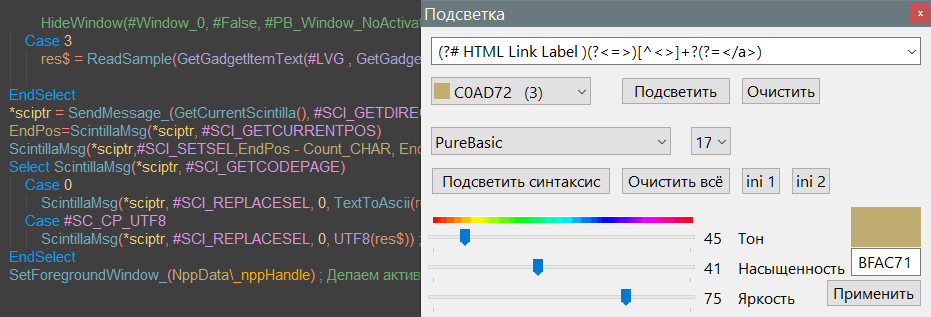

Highlight

Описание
Программа имеет 2 режима
1. Индивидуальная подсветка
2. Комплексная подсветка
Индивидуальная подсветка
Здесь используется выбор регулярного выражения из раскрывающегося списка или ручной ввод с последующим нажатием кнопки "Подсветить". Также можно просто ввести слово, это работает как обычный поиск. С помощью раскрывающегося списка выбора цвета можно задать цвет для подсветки. Можно выделять одним цветом, можно разными. Кнопкой "Очистить" очищается все подсветки для выбранного цвета.
Комплексная подсветка
Комплексная подсветка отличается тем, что можно задать несколько регулярных выражений и цветов под определённым именем и применить это одним кликом мыши. Естественный пример этого - подсветка языка программирования. Но этим не ограничивается, можно также подсветить какие либо синтаксические ошибки разного типа, например двойная заглавная буква "ПРивет" или двойное слово "привет, как как погода" или неправильно расставленные знаки препинания, например пробел перед запятой или перед точкой, и т.д. Также можно подсветить данные в таблице или какую либо информацию по тексту.
Кнопка "Очистить всё" удаляет все подсветки.
Выбор стиля индикатора
Тестовая возможность выбрать вид индикатора, это может быть нижнее подчёркивание разной толщины и формы, фоновое подсвечивание, и подсвечивание прямоугольником. На мой взгляд подсвечивание шрифта является наиболее удобным. Возможно эта функция будет удалена.
ini-файлы
Существуют 3 ini-файла, 2 из которых можно открыть прямо из окна плагина подсветки, что удобно для изменения регулярных выражений.
Highlight.ini - содержит секцию выбора регулярных выражений. Сюда вы можете добавить свои часто используемые. Здесь же цвета палитры в шестнадцатеричном виде RGB (можно задать свои цвета). Их порядок соответствует порядку в окне выбора. Там есть белая палитра, без качественного выбора совместимости цветов, ради быстрого теста.
Highlight_Sample.ini - содержит комплексную подсветку. Число слева (ключ) означает идентификатор цвета, он указан в скобках в выборе цвета. Значение слева - регулярное выражение, которое будет использовать свой идентификатор цвета. Можно давать одинаковые идентификаторы нескольким регулярным выражениям. Есть правило: старшие идентификаторы могут перекрасить младшие идентификаторы, но не наоборот. Если нужно чтобы в комментариях не подсвечивались ключевые слова, цифры, операторы и т.д., то идентификатор комментариев должен быть с большим числом. Это также работает и для индивидуальной подсветки.
Highlight_Lang.ini - языковой файл, в данном случай русский.
Highlight_Lang_Example_En.ini - на всякий случай английский языковой файл в качестве примера для пользователей других стран.
Изменение цвета индикатора
Изменение цвета индикатора необходимо в случае подбора подходящего. Нужно учесть, что индикатор является глобальным элементом палитры и изменит для всех, где используется изменяемый индикатор. За одну сессию можно изменить несколько индикаторов и они будут оставаться пока не переоткрыть окно плагина. Поэтому если необходимо сохранить, нужно открыть ini с палитрой и взамен выбранного цвета индикатора в раскрывающемся списке заменить такой же цвет цветом из поля.
Кнопка "Применить" используется, если в поле вставить свой цвет например из какого нибудь HTML-файла.
Внутренняя работа плагина
Плагин учитывает портабельность Notepad++ по наличию файла doLocalConf.xml и соответственно сам создаёт ini-файлы в нужной папке, локальной или AppData. Но языковой файл нужно помещать вручную. Быстро перейти в папку можно открыв ini-файл из окна плагина (надеюсь он откроется в Notepad++) и в контекстном меню вкладки выбрать "Открыть папку документа".
Количество цветом можно ещё добавить 1, но не должно превышать идентификатор 18, иначе он уже будет задействовать/переназначать идентификаторы других плагинов и самого Notepad++, а конкретно индикаторы подчёркивания плагина орфографии, и внутренние стилевые пометки 5 шт самого Notepad++. Это не страшно, просто их стиль будет таким, каким его определят выбранные цвет и стиль индикатора, причём до первого перезапуска программы.
При старте Notepad++ плаг ничего не изменяет, но как только запущено окно первый раз, это задаст стиль индикаторов.
Если по каким то причинам все раскрывающиеся списки пусты, это значит плагин не видит своих ini-файлов, например при использовании локальной папки (используя файл doLocalConf.xml) с запретом записи в неё.